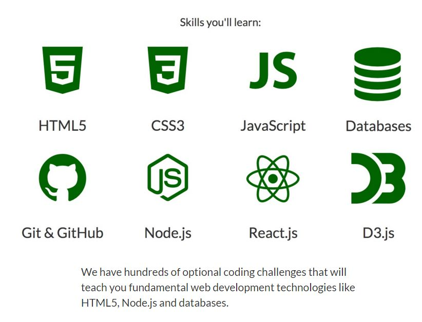

Reach Out! Help Someone
Zikworld is a platform that gives opportunity to everyone to render ideas and recieve ideas that can foster success and breaking barriers of isolation in individuals in pursuit of their dream careers
Resources that can help everyone become a sofware developer
If becoming a full stack developer is your goal, then this page is for you. This page will guide you through some resources that can enhance your dreams of becoming a full stack developer. Like Zik, you might also be wondering how you can figure out what resources you need and where to locate them.
These resources are not concise, but you are encourage to take in-depth look at the resources and following through to be able to get comfortable with them. You are also encourage to seek help from the resource owners and take advantage of the different channels made available by the sites to quicken your understanding.
Everyone can be motivated but not everyonehas the grit to continue
-
BYU-Pathway
BYU-Pathway Worldwide provides access to spiritually based degrees completely online at an affordable price. BYU-Pathway makes it possible to get a job with each certificate before even finishing a degree
BYU-Pathway Worldwide was created to serve online students. Degrees are awarded by BYU-Idaho and Ensign College, while BYU-Pathway provides the resources to help you succeed.
I choose PathwayConnect because of how it is structured and it is at low cost couppled with it spirituality of helping students to connect with God for their success in life. For more information click the link Byu
-
FreeCodeCamp
freeCodeCamp is a donor-supported tax-exempt 501(c)(3) charitable organization (United States Federal Tax Identification Number: 82-0779546) Our mission: to help people learn to code for free. We accomplish this by creating thousands of videos, articles, and interactive coding lessons - all freely available to the public. We also have thousands of freeCodeCamp study groups around the world.
FreeCodeCamp is also one of the platforms that zik uses to learn how to code. With The enganging and interective curriculum you cn easily learn to code. It gives you hands on learning ability with well guided projects to enhance your learning
With their forum, you also have the opportunity to ask questions and learners like you to render help when you are stuck. FreeCodeCamp will also guide you to other resources and skills that you will need to help you achieve your dreams.
-
The Odin Project
The Odin Project (TOP) is another resource that can help anyone become a software developer. It is structured in a way that you are directed to other sites to study and on the way, you will complete projects that will enhance your learning.
-
Others
You can check youtube pages about software development to get more information about resourceto become a software developer. indeed, there is no limit to what you can learn and become, go for it and reach it!